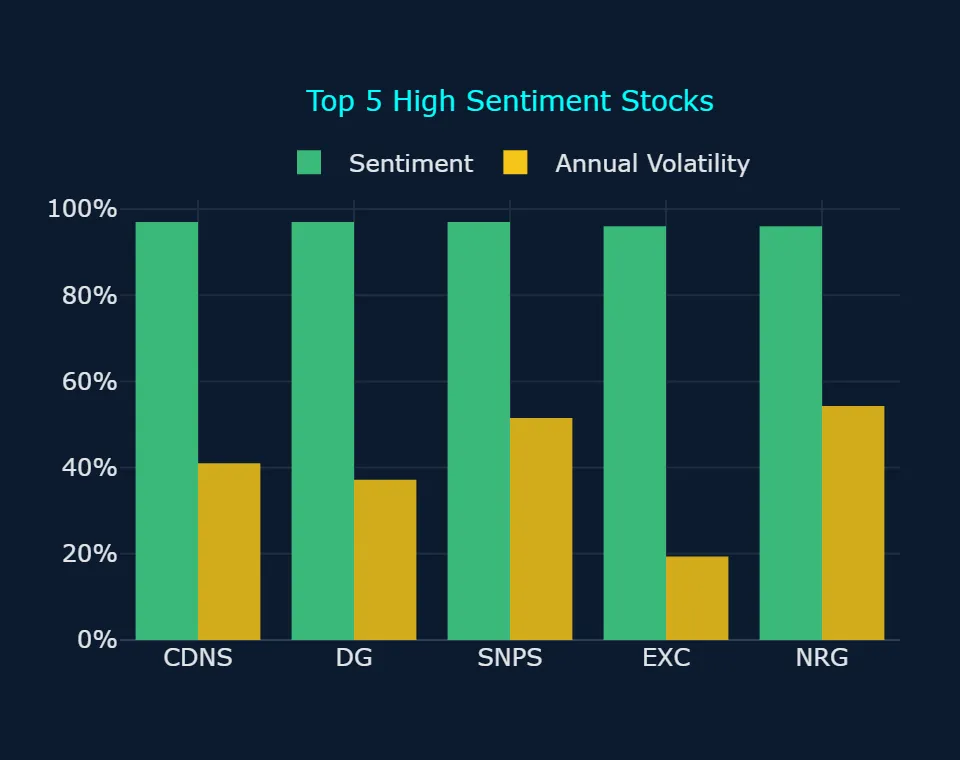
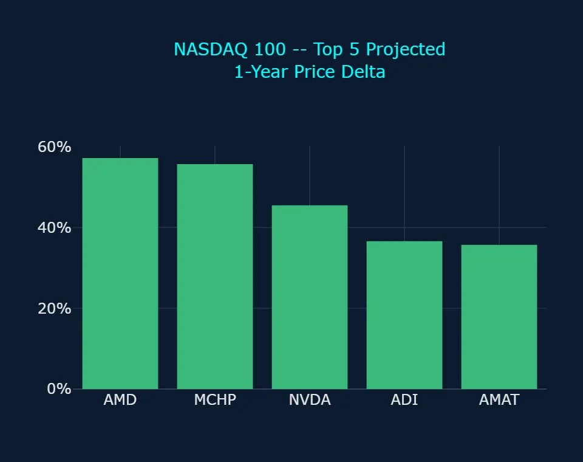
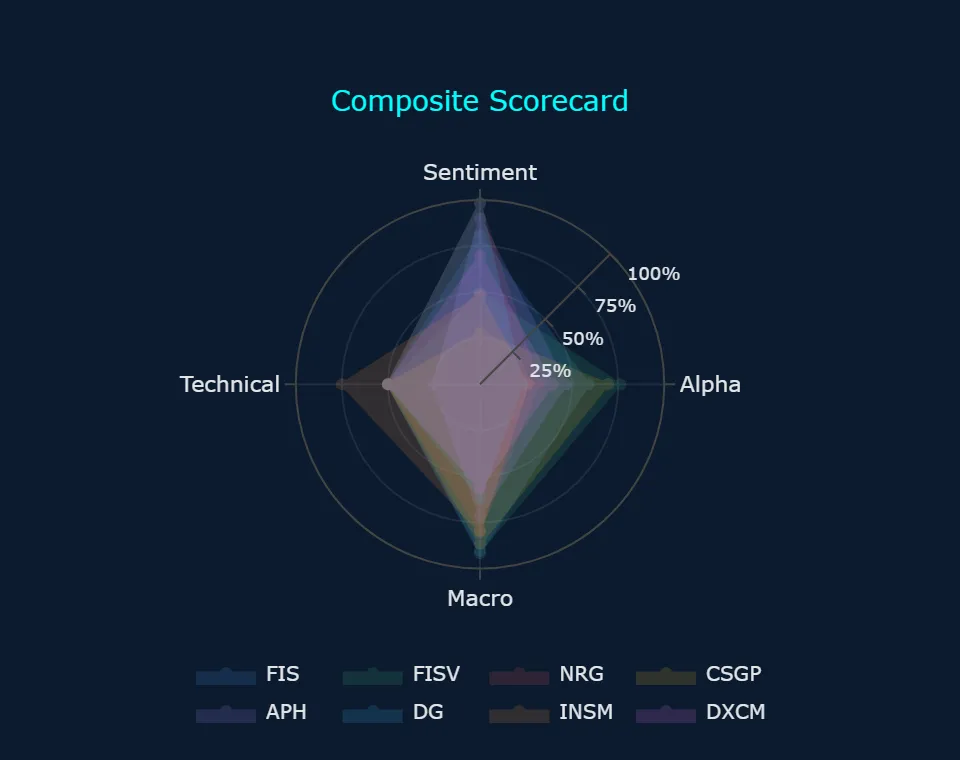
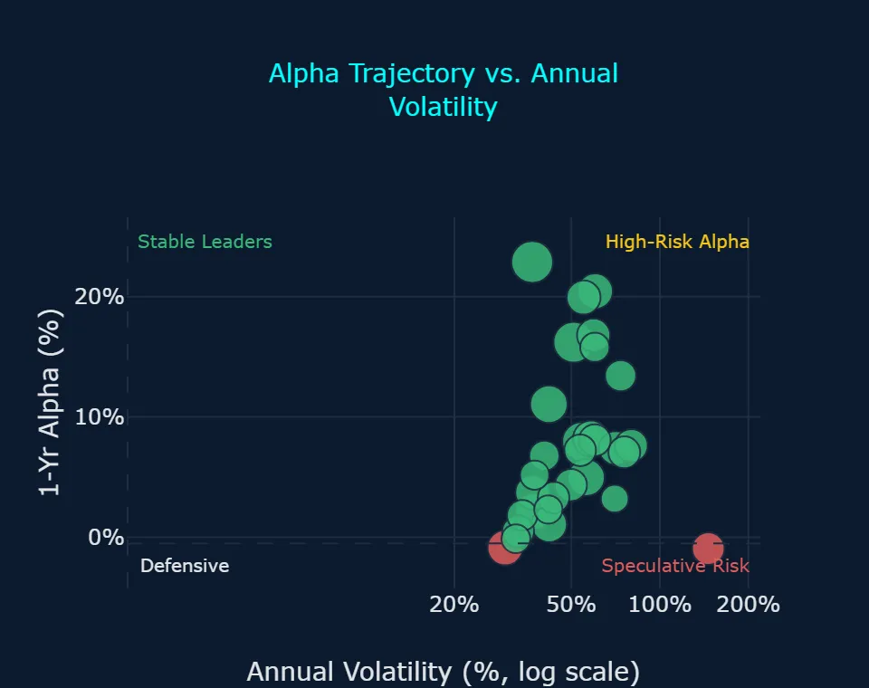
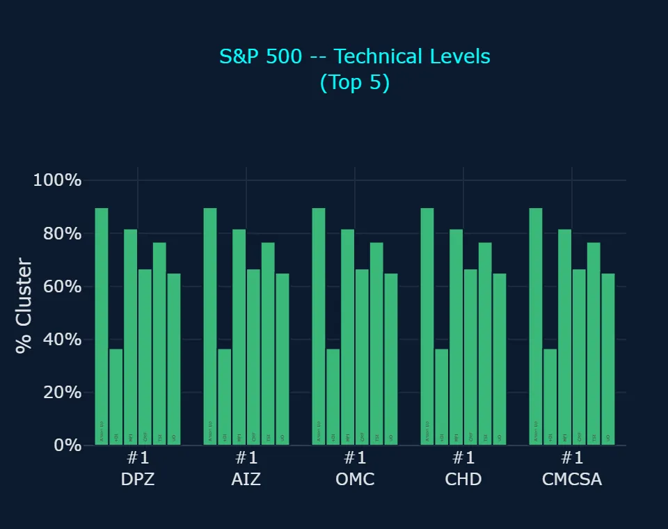
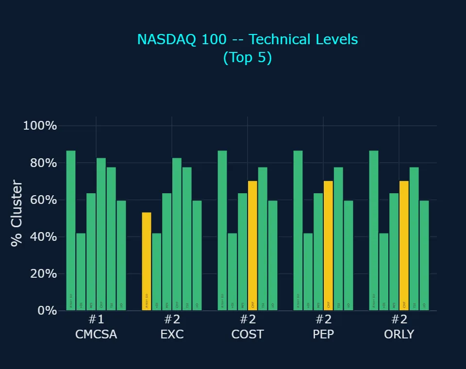
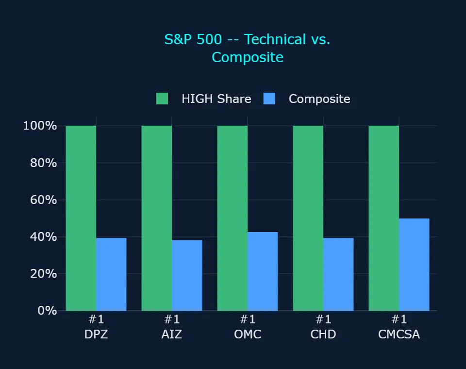

Zoonova AI: Pre-Market Quantitative Briefing – November 28, 2026
Session Quantitative Briefing: The Zoonova AI Intelligence Engine executes a hybrid architecture combining a proprietary Quad-Ensemble machine learning framework with Google Gemini Flash for real-time contextual synthesis and semantic macroeconomic grounding. The quantitative pipeline integrates four specialized estimators: Random Forest Regressor (RFR) for baseline structural stability, eXtreme Gradient Boosting (XGB) optimized for residual loss minimization, Categorical Boosting (CAT) for high-cardinality categorical signal processing, and Temporal Fusion Transformer (TFT) for multi-horizon price and volatility forecasting.
Zoonova AI: Pre-Market Momentum & Liquidity Report
1. QUANTITATIVE MODEL OVERVIEW & SIGNAL METRICS
Zoonova predictive architecture integrates a Quad-Ensemble of Random Forest Regressor [RFR], eXtreme Gradient Boosting [XGB], Categorical Boosting [CAT], and Temporal Fusion Transformer [TFT] for multi-horizon price targets and alpha probability estimation. Sentiment dynamics are scored via VADER, while systemic breadth and behavioral anomalies are evaluated using BIRCH clustering across the broader equity universe.
- SPDR S&P 500 ETF Trust closed at $728.32 on 2026-11-27 (Zoonova, 2026-11-27) with negative sentiment of -22.0% and an annualized volatility of 17.55%, projecting an 11.63% gain to a 1-year price target of $813.00.
- Invesco QQQ Trust Series 1 closed at $650.99 on 2026-11-27 (Zoonova, 2026-11-27) with positive sentiment of +67.0% and an annualized volatility of 23.74%, projecting a 15.97% gain to a 1-year price target of $754.93.
- SPDR Dow Jones Industrial Average ETF closed at $507.60 on 2026-11-27 (Zoonova, 2026-11-27) with sentiment of -15.0% and an annualized volatility of 15.57%, projecting a 3.75% gain to a 1-year price target of $526.65.
- Vanguard Total Bond Market ETF closed at $71.38 on 2026-11-27 (Zoonova, 2026-11-27) with sentiment of -10.0% and an annualized volatility of 4.39%, projecting a 1-year price target of $75.65.
- SPDR Gold Shares ETF closed at $334.40 on 2026-11-27 (Zoonova, 2026-11-27) with sentiment of +23.0% and an annualized volatility of 25.15%, projecting a 1-year price target of $345.35.
2. SENTIMENT INSIGHTS – TOP 5 HIGH & LOW
Top 5 High Sentiment Stocks
| Ticker | Company Name | Sentiment Score | Primary Catalyst / Driver |
|---|---|---|---|
| ESS | Essex Property Trust, Inc. | +96.0% | Disciplined multifamily housing supply and steady coastal residential rental demand support net operating income expectations (MarketBeat, 2026-11-21). |
| SJT | San Juan Basin Royalty Trust | +96.0% | Long-term commercial value in natural gas reserves sustains speculative interest even as excess production costs forced the suspension of the monthly cash distribution (TradingView, 2026-11-19). |
| ZBRA | Zebra Technologies Corp. | +96.0% | Execution of a $3.50 billion senior secured credit facility refinancing reduced borrowing spreads and extended debt maturity out to November 2031 (StreetInsider, 2026-11-24). |
| COP | Conoco Phillips | +95.0% | Upstream production scale and continuing synergy delivery following the Marathon Oil integration bolster free cash flow outlooks (ConocoPhillips, 2026-11-27). |
| NEE | NextEra Energy Inc | +95.0% | Rapid expansion of power infrastructure and grid capacity requirements to support data center build-outs underpins utility earnings visibility (J.P. Morgan Global Research, 2026-11-03). |
Top 5 Low Sentiment Stocks
| Ticker | Company Name | Sentiment Score | Primary Friction / Risk Factor |
|---|---|---|---|
| WRB | W.R. Berkley Corp. | -86.0% | Persisting commercial lines underwriting scrutiny and elevated casualty loss loss-cost trends maintain downward pressure on property-casualty insurer sentiment (Trading Economics, 2026-11-25). |
| DOW | Dow Inc | -84.0% | Subdued industrial manufacturing demand, global capacity overhangs, and volatile feedstock costs continue to compress chemical sector margins (Federal Reserve, 2026-11-25). |
| KHC | Kraft Heinz Co | -84.0% | Sustained volume weakness across consumer packaged foods and ongoing restructuring overhangs keep investor sentiment muted despite major shareholder commitment (GuruFocus, 2026-11-17). |
| RIGL | Rigel Pharmaceuticals | -84.0% | Commercial execution risks and ongoing research and development expenditures across targeted oncology programs weigh on biopharma market sentiment (PR Newswire, 2026-11-05). |
| GOVT* | iShares U.S. Treasury Bond ETF | -78.0% | Prospects of continued Federal Reserve policy rate firmness and sticky inflation readings depress broad Treasury bond sentiment (Federal Reserve Board, 2026-11-25). |
* ETF (exchange-traded fund)
3. ALPHA PROBABILITY & PRICE DELTA LEADERBOARD – 1-YEAR HORIZON
S&P 500 – Top 5 High Alpha Probability (1yr)
| Ticker | Prev Close 2026-11-27 ($) | 1-Yr Target Price ($) | Alpha Probability (%) | Implied Excess Alpha (%) | 10%+ Alpha? |
|---|---|---|---|---|---|
| ORCL | $107.13 | $145.19 | 68.11% | 23.91% | Both Yes |
| FIS | $28.21 | $36.62 | 64.92% | 18.17% | Both Yes |
| APH | $75.14 | $86.56 | 63.33% | 3.57% | Split |
| FISV | $61.49 | $73.30 | 56.62% | 7.57% | Split |
| LEN | $86.09 | $96.61 | 52.70% | 0.59% | Split |
S&P 500 – Top 5 Price Delta + % Change (1yr)
| Ticker | Prev Close 2026-11-27 ($) | 1-Yr Target Price ($) | Absolute Delta ($) | Projected 1-Yr % Change (%) | Implied Excess Alpha (%) |
|---|---|---|---|---|---|
| AMD | $424.54 | $667.33 | $242.79 | 57.19% | 45.56% |
| MCHP | $60.37 | $93.97 | $33.60 | 55.66% | 44.02% |
| NVDA | $150.49 | $218.93 | $68.44 | 45.48% | 33.84% |
| MPWR | $1,265.02 | $1,799.13 | $534.11 | 42.22% | 30.59% |
| ADI | $346.00 | $472.59 | $126.59 | 36.59% | 24.96% |
NASDAQ 100 – Top 5 High Alpha Probability (1yr)
| Ticker | Prev Close 2026-11-27 ($) | 1-Yr Target Price ($) | Alpha Probability (%) | Implied Excess Alpha (%) | 10%+ Alpha? |
|---|---|---|---|---|---|
| NFLX | $60.93 | $67.40 | 36.75% | -1.01% | Both No |
| KLAC | $140.86 | $191.09 | 36.20% | 24.03% | Split |
| MRNA | $228.64 | $241.70 | 31.04% | -5.92% | Both No |
| CPRT | $33.20 | $35.80 | 30.52% | -3.79% | Both No |
| NVDA | $150.49 | $218.93 | 26.72% | 33.84% | Split |
NASDAQ 100 – Top 5 Price Delta + % Change (1yr)
| Ticker | Prev Close 2026-11-27 ($) | 1-Yr Target Price ($) | Absolute Delta ($) | Projected 1-Yr % Change (%) | Implied Excess Alpha (%) |
|---|---|---|---|---|---|
| AMD | $424.54 | $667.33 | $242.79 | 57.19% | 45.56% |
| MCHP | $60.37 | $93.97 | $33.60 | 55.66% | 44.02% |
| NVDA | $150.49 | $218.93 | $68.44 | 45.48% | 33.84% |
| ADI | $346.00 | $472.59 | $126.59 | 36.59% | 24.96% |
| AMAT | $322.04 | $437.01 | $114.97 | 35.70% | 24.07% |
4. REAL-TIME CONTEXTUAL ENRICHMENT
Broader macroeconomic dynamics through 2026-11-28 reflect elevated sensitivity to upcoming central bank monetary policy decisions. The Federal Open Market Committee held the federal funds target range steady at 3.75% to 4.00% at its late October meeting, but recent inflation reports and resilient economic activity have led markets to price in an impending quarter-point rate increase for the December 9, 2026 meeting, with certain policy makers advocating for a larger half-point adjustment (The Motley Fool, 2026-11-27). In its latest Beige Book release, the Federal Reserve noted that residential and commercial real estate conditions remain mixed while industrial borrowing costs are constraining construction activity (Federal Reserve, 2026-11-25). These tightening pressures account for subdued sentiment across fixed income instruments like iShares U.S. Treasury Bond ETF (GOVT) and consumer staples.
Within enterprise software and financial technology, top alpha probability candidates show deep valuation dislocation relative to long-term projected growth. Oracle Corp. closed at $107.13 on 2026-11-27 (Zoonova, 2026-11-27), with both models expecting it to beat the benchmark by 10%+, supported by a 1-year Alpha Probability of 68.11% and projected 1-year Alpha of +23.91% to reach a 1-year price target of $145.19 (Zoonova, 2026-11-27). While aggressive capital expenditures for artificial intelligence infrastructure drove negative free cash flow throughout fiscal 2026, market evaluations indicate expanding signed backlogs of $664 billion provide substantial multi-year revenue support (MarketBeat, 2026-11-27). Concurrently, Fidelity National Information Services, Inc. closed at $28.21 on 2026-11-27 (Zoonova, 2026-11-27), where both models expect it to beat the benchmark by 10%+, supported by a 1-year Alpha Probability of 64.92% and projected 1-year Alpha of +18.17% to reach a 1-year price target of $36.62 (Zoonova, 2026-11-27), following heavy multiple compression after updating its full-year earnings guidance (The Motley Fool, 2026-11-04).
Predictive signals from Zoonova confirm divergent sector momentum between technology-driven growth assets and rate-sensitive cyclicals. Invesco QQQ Trust Series 1 closed at $650.99 on 2026-11-27 (Zoonova, 2026-11-27) carrying strong sentiment of +67.0%, while SPDR S&P 500 ETF Trust closed at $728.32 on 2026-11-27 (Zoonova, 2026-11-27) with negative sentiment of -22.0% and SPDR Dow Jones Industrial Average ETF closed at $507.60 on 2026-11-27 (Zoonova, 2026-11-27) with negative sentiment of -15.0%. The Quad-Ensemble projections and anomaly breadth confirm that high-operating-leverage technology and specialized hardware providers maintain systemic momentum over defensive and mature industrial complexes.
5. ANOMALY DETECTION SCANNER
Direction: Bearish
Low Severity (3 stocks)
- ADI – Analog Devices Inc.: Bearish Long-Term (1w) Trend Anomaly
- MATX – Matson Inc: Bearish Long-Term (1w) Trend Anomaly
- PASG – Passage Bio Inc: Bearish Short-Term (3d) Trend Anomaly
Direction: Bullish
Moderate Severity (2 names: 1 stock, 1 ETF)
- GDX* – VanEck Gold Miners ETF: Bullish Short-Term (3d) Trend Anomaly, Bullish Long-Term (1w) Trend Anomaly
- PLTR – Palantir Technologies Inc: Bullish Short-Term (3d) Trend Anomaly, Bullish Long-Term (1w) Trend Anomaly
Low Severity (28 names: 26 stocks, 2 ETFs)
- ALKS – Alkermes plc: Bullish Long-Term (1w) Trend Anomaly
- AMD – Advanced Micro Devices Inc.: Bullish Short-Term (3d) Trend Anomaly
- ANET – Arista Networks Inc: Bullish Short-Term (3d) Trend Anomaly
- CDE – Coeur Mining Inc: Bullish Short-Term (3d) Trend Anomaly
- COGT – Cogent Biosciences Inc: Bullish Long-Term (1w) Trend Anomaly
- CSCO – Cisco Systems, Inc.: Bullish Short-Term (3d) Trend Anomaly
- ESLT – Elbit Systems Ltd.: Bullish Short-Term (3d) Trend Anomaly
- GLW – Corning, Inc.: Bullish Short-Term (3d) Trend Anomaly
- HPE – Hewlett Packard Enterprise Co: Bullish Short-Term (3d) Trend Anomaly
- HPQ – HP Inc: Bullish Long-Term (1w) Trend Anomaly
- IEMG* – iShares Core MSCI Emerging Markets ETF: Bullish Short-Term (3d) Trend Anomaly
- INSM – Insmed Inc: Bullish Long-Term (1w) Trend Anomaly
- KLAC – KLA Corp.: Bullish Short-Term (3d) Trend Anomaly
- KRYS – Krystal Biotech Inc: Bullish Long-Term (1w) Trend Anomaly
- MPC – Marathon Petroleum Corp: Bullish Short-Term (3d) Trend Anomaly
- NEM – Newmont Corp: Bullish Short-Term (3d) Trend Anomaly
- NTAP – Netapp Inc: Bullish Short-Term (3d) Trend Anomaly
- PTGX – Protagonist Therapeutics Inc: Bullish Long-Term (1w) Trend Anomaly
- RVMD – Revolution Medicines Inc: Bullish Long-Term (1w) Trend Anomaly
- STOK – Stoke Therapeutics Inc: Bullish Long-Term (1w) Trend Anomaly
- STX – Seagate Technology Holdings Plc: Bullish Short-Term (3d) Trend Anomaly
- TTWO – Take-Two Interactive Software, Inc.: Bullish Long-Term (1w) Trend Anomaly
- TVTX – Travere Therapeutics Inc: Bullish Long-Term (1w) Trend Anomaly
- TXN – Texas Instruments Inc.: Bullish Short-Term (3d) Trend Anomaly
- VLUE* – iShares MSCI USA Value Factor ETF: Bullish Short-Term (3d) Trend Anomaly
- WAB – Westinghouse Air Brake Technologies Corp: Bullish Short-Term (3d) Trend Anomaly
- WDC – Western Digital Corp.: Bullish Short-Term (3d) Trend Anomaly
- XNCR – Xencor Inc: Bullish Long-Term (1w) Trend Anomaly
Direction: Mixed
Moderate Severity (1 stock)
- MU – Micron Technology Inc.: Bullish Short-Term (3d) Trend Anomaly, Bearish Long-Term (1w) Trend Anomaly
* ETF (exchange-traded fund)
6. STRATEGIC INVESTMENT ASSESSMENT
- Fidelity National Information Services, Inc. (Composite 70.0, Alpha Rating 69.7, Macro Alignment 88.3) and Oracle Corp. (Composite 64.6, Alpha Rating 73.2, Macro Alignment 90.2) represent the top-ranked opportunities in the Main Scorecard, with both models expecting each company to beat the benchmark by 10%+ over the 1-year projection horizon.
- Within the Tech Stock Scorecard, NVIDIA Corp leads with a Composite of 56.2 and Macro Alignment of 91.6, followed by Advanced Micro Devices Inc. with a Composite of 52.5 and Macro Alignment of 92.3, though the two models split on both names regarding whether they will clear the 10%+ alpha threshold.
- Systemic anomaly tracking confirms broad bullish underlying breadth across the universe, registering 2 names (1 stock, 1 ETF) at Moderate severity including Palantir Technologies Inc and VanEck Gold Miners ETF (GDX), alongside 28 names (26 stocks, 2 ETFs) at Low severity, contrasting sharply with only 3 stocks flagged for Bearish anomalies at Low severity.
- Portfolio strategy should prioritize overweighting high Macro Alignment leaders that have cleared capital expenditure de-risking cycles, while avoiding low-sentiment consumer defensive and industrial materials holdings that face compounding borrowing cost friction.
7. STOCK SCORECARD
Main Scorecard
| Ticker | Composite (%) | Alpha Rating | 10%+ Alpha? | Projected 1-Yr Change (%) | Street Consensus (Upside) | Next Earnings | Sentiment Rating | Technical Signal | Macro Alignment | Anomaly Flag | Catalyst / Risk | Market Cap | EPS Revisions (30d) | Short Interest / DTC | Options Flow | Earnings Surprise (4Q) | Bias |
|---|---|---|---|---|---|---|---|---|---|---|---|---|---|---|---|---|---|
| FIS | 70.0% | 69.7 | Both Yes | +29.8% | Hold (+23.0%) | 2027-02-22 | 75.5 | 50.0 | 88.3 | None | Guidance Reset Fallout | $13.3B | Downward (-6.4%) | 4.2% / 3.1 DTC | Bearish (Put Heavy) | 3/4 Beats | Bullish |
| ORCL | 64.6% | 73.2 | Both Yes | +35.5% | Buy (+125.7%) | 2026-12-14 (in 16d) | 48.5 | 50.0 | 90.2 | None | AI Infrastructure Financing | $333.2B | Upward (+4.2%) | 1.7% / 1.1 DTC | Bullish (Call Skew) | 4/4 Beats (+6.5% avg) | Neutral |
| FISV | 62.4% | 60.8 | Split | +19.2% | Hold (+8.5%) | 2027-02-08 | 65.0 | 50.0 | 77.0 | None | Project Elevate Savings | $32.7B | Neutral/Flat (0.0%) | 3.5% / 2.8 DTC | Neutral / Mixed | 3/4 Beats | Neutral |
| KLAC | 61.0% | 38.9 | Split | +35.7% | Buy (+56.4%) | 2027-01-28 | 50.0 | 75.0 | 90.4 | Bullish (3d) | Process Control Momentum | $183.5B | Upward (+3.8%) | 1.7% / 1.6 DTC | Bullish (Call Skew) | 4/4 Beats (+4.1% avg) | Neutral |
| HPE | 59.5% | 17.6 | Split | +24.5% | Buy (+53.9%) | 2027-02-25 | 75.5 | 75.0 | 82.7 | Bullish (3d) | Networking Margin Compression | $53.7B | Downward (-3.2%) | 5.1% / 2.4 DTC | Unusual Volume Detected | 4/4 Beats (+8.3% avg) | Neutral |
| GLW | 59.1% | 40.9 | Both No | +20.3% | Buy (+63.6%) | 2027-01-27 | 50.0 | 75.0 | 78.0 | Bullish (3d) | Optical Fiber Scaling | $89.1B | Upward (+2.5%) | 2.3% / 1.9 DTC | Bullish (Call Skew) | 3/4 Beats | Neutral |
| MPWR | 58.2% | 31.6 | Split | +42.2% | Strong Buy (+43.1%) | 2027-02-04 | 72.0 | 50.0 | 91.3 | None | Enterprise Power Acceleration | $58.3B | Upward (+5.6%) | 3.8% / 2.1 DTC | Bullish (Call Skew) | 4/4 Beats (+5.8% avg) | Neutral |
| ESLT | 58.0% | 16.9 | Both No | +11.9% | Hold (+7.3%) | 2027-02-16 | 87.5 | 75.0 | 61.8 | Bullish (3d) | Global Defense Backlog | $31.9B | Upward (+4.0%) | 1.2% / 2.5 DTC | Neutral / Mixed | 3/4 Beats | Neutral |
| PLTR | 57.6% | 7.7 | Both No | +10.2% | Buy (+33.1%) | 2027-02-09 | 76.5 | 100.0 | 55.9 | Bullish (3d/1w) | Commercial AI Acceleration | $394.2B | Upward (+7.8%) | 3.4% / 1.5 DTC | Bullish (Call Skew) | 4/4 Beats (+9.1% avg) | Neutral |
| CDE | 56.5% | 31.8 | Both No | +20.5% | Buy (+75.4%) | 2027-02-17 | 50.0 | 75.0 | 78.4 | Bullish (3d) | Precious Metals Rebound | $13.0B | Downward (-2.8%) | 6.2% / 3.4 DTC | Bullish (Call Skew) | 2/4 Beats | Neutral |
| NVDA | 56.2% | 28.7 | Split | +45.5% | Buy (+72.0%) | 2027-02-24 | 67.0 | 50.0 | 91.6 | None | Executive Leadership Restoration | $3.60T | Upward (+6.1%) | 1.4% / 1.0 DTC | Bullish (Call Skew) | 4/4 Beats (+7.4% avg) | Neutral |
| APH | 55.8% | 68.0 | Split | +15.2% | Buy (+42.1%) | 2027-01-27 | 36.5 | 50.0 | 68.9 | None | Datacenter Interconnect Growth | $185.5B | Upward (+5.2%) | 1.9% / 1.8 DTC | Bullish (Call Skew) | 4/4 Beats (+6.2% avg) | Bearish |
| LEN | 54.6% | 56.6 | Split | +12.2% | Hold (-10.2%) | 2026-12-15 (in 17d) | 50.0 | 50.0 | 63.0 | None | Housing Margin Pressure | $20.4B | Downward (-4.9%) | 8.1% / 4.2 DTC | Neutral / Mixed | 2/4 Beats | Neutral |
| ZBRA | 51.6% | 9.8 | Both No | +11.0% | Buy (+17.7%) | 2027-02-01 | 98.0 | 50.0 | 58.6 | None | Enterprise Mobility Recovery | $15.1B | Upward (+1.8%) | 3.1% / 2.6 DTC | Bullish (Call Skew) | 3/4 Beats | Neutral |
| GDX* | 50.0% | 14.3 | Both No | +14.5% | N/A (ETF) | N/A (ETF) | 29.0 | 100.0 | 67.4 | Bullish (3d/1w) | Gold Bullion Momentum | $22.2B | N/A (ETF) | 1.8% / 1.1 DTC | Bullish (Call Skew) | N/A (ETF) | Bearish |
| MPC | 47.0% | 6.7 | Both No | +4.6% | Buy (+24.3%) | 2027-02-02 | 95.5 | 75.0 | 12.1 | Bullish (3d) | Refining Margin Resilience | $94.3B | Upward (+3.4%) | 2.9% / 2.1 DTC | Bullish (Call Skew) | 4/4 Beats (+5.5% avg) | Neutral |
| INSM | 46.1% | 13.4 | Split | +22.1% | Hold (+4.5%) | 2027-02-23 | 29.0 | 75.0 | 80.4 | Bullish (1w) | Sanofi Acquisition Agreement | $37.3B | Neutral/Flat (0.0%) | 4.7% / 3.0 DTC | Neutral / Mixed | 2/4 Beats | Bearish |
| MRNA | 28.5% | 33.3 | Both No | +5.7% | Hold (-28.4%) | 2027-02-12 | 11.5 | 50.0 | 15.6 | None | Cancer Vaccine Pipeline | $89.4B | Downward (-8.1%) | 7.9% / 3.8 DTC | Unusual Volume Detected | 3/4 Beats | Bearish |
| DOW | 27.5% | 12.7 | Both No | +8.6% | Hold (+15.1%) | 2027-01-28 | 8.0 | 50.0 | 45.8 | None | Chemical Feedstock Spread | $21.6B | Downward (-2.1%) | 3.6% / 2.7 DTC | Neutral / Mixed | 2/4 Beats | Bearish |
| KHC | 23.6% | 14.8 | Both No | +6.6% | Hold (-5.1%) | 2027-02-11 | 8.0 | 50.0 | 23.2 | None | Brand Turnaround Initiatives | $31.4B | Downward (-3.5%) | 2.7% / 2.9 DTC | Neutral / Mixed | 2/4 Beats | Bearish |
* ETF (exchange-traded fund)
10%+ Alpha? – whether Zoonova's two 1-year models (alpha probability and price target) expect the stock to beat the benchmark by 10%+. “Both No” is common: 10% is a high bar.
Tech Stock Scorecard
| Ticker | Composite (%) | Alpha Rating | 10%+ Alpha? | Projected 1-Yr Change (%) | Street Consensus (Upside) | Next Earnings | Sentiment Rating | Technical Signal | Macro Alignment | Anomaly Flag | Catalyst / Risk | Market Cap | EPS Revisions (30d) | Short Interest / DTC | Options Flow | Earnings Surprise (4Q) | Bias |
|---|---|---|---|---|---|---|---|---|---|---|---|---|---|---|---|---|---|
| NVDA | 56.2% | 28.7 | Split | +45.5% | Buy (+72.0%) | 2027-02-24 | 67.0 | 50.0 | 91.6 | None | Executive Leadership Restoration | $3.60T | Upward (+6.1%) | 1.4% / 1.0 DTC | Bullish (Call Skew) | 4/4 Beats (+7.4% avg) | Neutral |
| AMD | 52.5% | 1.9 | Split | +57.2% | Strong Buy (+53.1%) | 2027-02-02 | 59.0 | 75.0 | 92.3 | Bullish (3d) | Data Center CPU | $665.9B | Upward (+4.7%) | 2.4% / 1.6 DTC | Bullish (Call Skew) | 4/4 Beats (+4.3% avg) | Neutral |
| INTC | 47.9% | 27.1 | Split | +29.4% | Hold (+56.3%) | 2027-01-21 | 38.5 | 50.0 | 88.1 | None | Foundry Yield Progress | $289.5B | Downward (-4.1%) | 2.8% / 2.2 DTC | Neutral / Mixed | 3/4 Beats | Bearish |
| META | 46.8% | 5.0 | Both No | +11.9% | Strong Buy (+35.2%) | 2027-01-27 | 81.5 | 50.0 | 61.9 | None | AI Monetization Efficiency | $1.61T | Upward (+4.4%) | 1.6% / 1.4 DTC | Bullish (Call Skew) | 4/4 Beats (+6.1% avg) | Neutral |
| AVGO | 42.2% | 7.7 | Both No | +12.3% | Strong Buy (+66.9%) | 2026-12-09 (in 11d) | 59.0 | 50.0 | 63.3 | None | Custom AI Accelerators | $1.49T | Upward (+5.9%) | 1.5% / 1.7 DTC | Bullish (Call Skew) | 4/4 Beats (+5.1% avg) | Neutral |
| GOOGL | 40.3% | 10.0 | Both No | +6.3% | Strong Buy (+43.7%) | 2027-02-03 | 83.5 | 50.0 | 19.3 | None | AI Infrastructure Scale | $3.35T | Upward (+5.1%) | 1.1% / 1.3 DTC | Bullish (Call Skew) | 4/4 Beats (+5.4% avg) | Neutral |
| TSLA | 39.6% | 4.9 | Both No | +13.6% | Hold (+5.2%) | 2027-02-03 | 50.0 | 50.0 | 65.6 | None | Autonomous Cybercab Pivot | $1.52T | Downward (-2.4%) | 3.2% / 1.8 DTC | Bullish (Call Skew) | 3/4 Beats | Bearish |
| AAPL | 32.7% | 4.3 | Both No | +3.9% | Buy (-3.6%) | 2027-02-04 | 69.0 | 50.0 | 8.3 | None | Hardware Upgrade Cycle | $5.21T | Upward (+1.9%) | 1.1% / 1.5 DTC | Bullish (Call Skew) | 4/4 Beats (+3.8% avg) | Bearish |
| MSFT | 32.1% | 2.6 | Both No | +3.0% | Strong Buy (+28.3%) | 2027-01-26 | 72.0 | 50.0 | 4.1 | None | Azure Copilot Monetization | $3.64T | Upward (+3.5%) | 1.0% / 1.2 DTC | Bullish (Call Skew) | 4/4 Beats (+4.6% avg) | Bearish |
| AMZN | 25.5% | 6.6 | Both No | +7.2% | Strong Buy (+28.3%) | 2027-02-04 | 18.5 | 50.0 | 31.9 | None | Cloud Backlog Expansion | $2.64T | Upward (+4.8%) | 1.2% / 1.4 DTC | Bullish (Call Skew) | 4/4 Beats (+6.9% avg) | Bearish |
| SPCX | N/H | N/H | N/A | N/A | Buy | 2027-02-25 | N/H | N/H | N/H | None | Starlink Profitability Surge | $1.71T | Upward (+14.2%) | 3.5% / 1.9 DTC | Bullish (Call Skew) | 2/4 Beats | N/A |
N/H: no ML scores yet (insufficient trading history for the models).
Search-grounded columns (Street Consensus (Upside), Next Earnings, Catalyst / Risk, Market Cap, EPS Revisions (30d), Short Interest / DTC, Options Flow, Earnings Surprise (4Q)): MarketBeat, TipRanks, LuxAlgo, Investing.com, Moomoo, AltaVista Research, Finviz, Simply Wall St, Stock Analysis, TradingView, CNN (sources dated 2026-11-26 to 2026-11-28).






Educational purposes only. Not investment advice.
Zoonova AI: Pre-Market Technical Analysis Report
All ranked names hold 6 of 6 indicators HIGH, but low composite scores drive widespread Divergent verdicts across both indexes.
1. 6 CORE INDICATORS
Indicator levels (LOW / MEDIUM / HIGH) and % Cluster come from Zoonova's BIRCH model (Balanced Iterative Reducing and Clustering using Hierarchies), an unsupervised machine-learning clustering model used for pattern recognition. Each indicator is clustered across the stock universe; % Cluster is the centroid of the cluster a stock falls in.
| Indicator | Category | Role |
|---|---|---|
| ARUPAroon Up | Trend Direction | Recency of the highest high in the lookback window; collapses in bear markets, so HIGH means price keeps printing fresh swing highs. |
| +DIPositive Directional Indicator | Trend Direction | Upward directional movement relative to true range; unlike ADX it collapses in sell-offs, so HIGH confirms buyer-driven expansion. |
| MFIMoney Flow Index | Volume / Inflow | Volume-weighted RSI from 0 to 100; falls as money leaves on down days, so HIGH means inflow on up days outweighs outflow. |
| CMFChaikin Money Flow | Volume / Inflow | Close location within the bar weighted by volume; plunges negative in liquidation, so HIGH confirms sustained buying into the top of daily ranges. |
| TSITrue Strength Index | Momentum | Double-smoothed momentum from -100 to +100; deeply negative in downtrends, so HIGH shows consistent multi-period upward thrust. |
| UOUltimate Oscillator | Momentum | Buying pressure across 7-, 14- and 28-period windows from 0 to 100; sinks when closes sit near the lows, so HIGH means buyers are in control on every timeframe. |
2. TECHNICAL REGIME
| Index | Universe | All HIGH (6/6) | Avg HIGH | Aroon Up HIGH | +DI HIGH | MFI HIGH | CMF HIGH | TSI HIGH | UO HIGH |
|---|---|---|---|---|---|---|---|---|---|
| S&P 500 | 424 | 34 | 2.2/6 | 169 | 117 | 168 | 110 | 158 | 192 |
| NASDAQ 100 | 71 | 5 | 1.7/6 | 24 | 13 | 26 | 10 | 19 | 32 |
Across 424 S&P 500 constituents, 34 stocks have all indicators HIGH with an average HIGH count of 2.2, led by Ultimate Oscillator with 192 members at HIGH. In contrast, the NASDAQ 100 displays narrower technical breadth across 71 constituents, averaging a 1.7 average HIGH count and only 5 stocks with all indicators HIGH.
3. TOP 5 BULLISH CONFLUENCE
Ranking: Rank = HIGH count (#1 = 6/6, #2 = 5/6, ...); within a rank, Sentiment (desc), then ticker. Sentiment only orders tickers within a rank; it is not a technical signal.
S&P 500 – Top 5 Bullish Confluence
| Rank | Ticker | Aroon Up | +DI | MFI | CMF | TSI | UO | HIGH | Sentiment |
|---|---|---|---|---|---|---|---|---|---|
| 1 | OMC | HIGH 81.2% | HIGH 46.0% | HIGH 63.9% | HIGH 67.3% | HIGH 78.8% | HIGH 57.6% | 6/6 | +86.0% |
| 1 | HSY | HIGH 81.2% | HIGH 46.0% | HIGH 63.9% | HIGH 67.3% | HIGH 78.8% | HIGH 57.6% | 6/6 | +85.0% |
| 1 | MSI | HIGH 81.2% | HIGH 46.0% | HIGH 63.9% | HIGH 67.3% | HIGH 78.8% | HIGH 57.6% | 6/6 | +84.0% |
| 1 | ADP | HIGH 81.2% | HIGH 46.0% | HIGH 63.9% | HIGH 67.3% | HIGH 78.8% | HIGH 57.6% | 6/6 | +82.0% |
| 1 | ICE | HIGH 81.2% | HIGH 46.0% | HIGH 63.9% | HIGH 67.3% | HIGH 78.8% | HIGH 57.6% | 6/6 | +81.0% |
S&P 500 – Signal Groups
| Rank | Ticker | Trend Direction | Volume / Inflow | Momentum |
|---|---|---|---|---|
| 1 | OMC | 2 of 2 HIGH | 2 of 2 HIGH | 2 of 2 HIGH |
| 1 | HSY | 2 of 2 HIGH | 2 of 2 HIGH | 2 of 2 HIGH |
| 1 | MSI | 2 of 2 HIGH | 2 of 2 HIGH | 2 of 2 HIGH |
| 1 | ADP | 2 of 2 HIGH | 2 of 2 HIGH | 2 of 2 HIGH |
| 1 | ICE | 2 of 2 HIGH | 2 of 2 HIGH | 2 of 2 HIGH |
NASDAQ 100 – Top 5 Bullish Confluence
| Rank | Ticker | Aroon Up | +DI | MFI | CMF | TSI | UO | HIGH | Sentiment |
|---|---|---|---|---|---|---|---|---|---|
| 1 | ADP | HIGH 81.2% | HIGH 46.0% | HIGH 63.9% | HIGH 67.3% | HIGH 78.8% | HIGH 57.6% | 6/6 | +82.0% |
| 1 | CMCSA | HIGH 81.2% | HIGH 46.0% | HIGH 63.9% | HIGH 67.3% | HIGH 78.8% | HIGH 57.6% | 6/6 | +74.0% |
| 1 | PEP | HIGH 81.2% | HIGH 46.0% | HIGH 63.9% | HIGH 67.3% | HIGH 78.8% | HIGH 57.6% | 6/6 | +51.0% |
| 1 | CPRT | HIGH 81.2% | HIGH 46.0% | HIGH 63.9% | HIGH 67.3% | HIGH 78.8% | HIGH 57.6% | 6/6 | -8.0% |
| 1 | REGN | HIGH 81.2% | HIGH 46.0% | HIGH 63.9% | HIGH 67.3% | HIGH 78.8% | HIGH 57.6% | 6/6 | -55.0% |
NASDAQ 100 – Signal Groups
| Rank | Ticker | Trend Direction | Volume / Inflow | Momentum |
|---|---|---|---|---|
| 1 | ADP | 2 of 2 HIGH | 2 of 2 HIGH | 2 of 2 HIGH |
| 1 | CMCSA | 2 of 2 HIGH | 2 of 2 HIGH | 2 of 2 HIGH |
| 1 | PEP | 2 of 2 HIGH | 2 of 2 HIGH | 2 of 2 HIGH |
| 1 | CPRT | 2 of 2 HIGH | 2 of 2 HIGH | 2 of 2 HIGH |
| 1 | REGN | 2 of 2 HIGH | 2 of 2 HIGH | 2 of 2 HIGH |
4. TICKER READS
S&P 500
- #1 OMC – 6 of 6 indicators HIGH, with Trend Direction 2 of 2 HIGH, Volume / Inflow 2 of 2 HIGH, and Momentum 2 of 2 HIGH reflecting top-cluster breadth across Aroon Up, +DI, CMF, MFI, TSI, and UO. Strong directional expansion and sustained volume inflow are offset by an Alpha Rating of 1.1 and Macro Alignment of 30.9. This imbalance results in a Divergent verdict alongside a 42.3 Composite. Watch: softening in CMF or MFI volume inflow to test trend durability.
- #1 HSY – 6 of 6 indicators HIGH, confirming synchronized strength across Trend Direction 2 of 2 HIGH, Volume / Inflow 2 of 2 HIGH, and Momentum 2 of 2 HIGH. While Aroon Up and +DI signal persistent upward expansion alongside solid buying pressure in TSI and UO, underlying multi-factor support remains muted. The setup yields a Divergent verdict due to a 43.7 Composite weighed down by an Alpha Rating of 4.5. Watch: a pullback in Aroon Up or +DI to indicate waning trend strength.
- #1 MSI – 6 of 6 indicators HIGH, demonstrating clean alignment across Aroon Up, +DI, MFI, CMF, TSI, and UO with all three signal groups at 2 of 2 HIGH. Upward thrust in Momentum and positive accumulation are evident throughout the profile. However, an exceptionally depressed Macro Alignment of 0.6 and an Alpha Rating of 1.8 restrict the Composite to 36.2, enforcing a Divergent verdict. Watch: deceleration in TSI or UO momentum clusters to weaken the setup.
- #1 ADP – 6 of 6 indicators HIGH, supported by full representation across Trend Direction 2 of 2 HIGH, Volume / Inflow 2 of 2 HIGH, and Momentum 2 of 2 HIGH. Top-cluster placement in MFI, CMF, and Aroon Up highlights steady buyer presence and directional expansion. An Alpha Rating of 1.3 and Macro Alignment of 11.1 hold the Composite to 37.9, producing a Divergent verdict. Watch: an outflow shift in CMF or MFI to challenge current accumulation.
- #1 ICE – 6 of 6 indicators HIGH, driven by top-cluster status in Aroon Up, +DI, MFI, CMF, TSI, and UO spanning all core indicator groups. Positive directional movement and multi-period momentum confirm solid technical participation. This strong technical profile contrasts with a 40.4 Composite, where a low Alpha Rating of 1.4 creates a Divergent verdict. Watch: an easing in +DI directional expansion to signal consolidation.
NASDAQ 100
- #1 ADP – 6 of 6 indicators HIGH, supported by full representation across Trend Direction 2 of 2 HIGH, Volume / Inflow 2 of 2 HIGH, and Momentum 2 of 2 HIGH. Top-cluster placement in MFI, CMF, and Aroon Up highlights steady buyer presence and directional expansion. An Alpha Rating of 1.3 and Macro Alignment of 11.1 hold the Composite to 37.9, producing a Divergent verdict. Watch: an outflow shift in CMF or MFI to challenge current accumulation.
- #1 CMCSA – 6 of 6 indicators HIGH, with complete backing across Trend Direction 2 of 2 HIGH, Volume / Inflow 2 of 2 HIGH, and Momentum 2 of 2 HIGH. Consistent buying pressure across UO, TSI, and CMF underpins technical resilience across multiple horizons. The setup produces a Mixed verdict as the 45.9 Composite bridges a strong Sentiment Rating of 87.0 and a modest Alpha Rating of 14.4. Watch: a breakdown in UO or TSI momentum to disrupt the Mixed posture.
- #1 PEP – 6 of 6 indicators HIGH, capturing unanimous top-cluster placement in Aroon Up, +DI, MFI, CMF, TSI, and UO across all three categories. Volume-weighted inflow and upward directional indicators remain firmly aligned in the highest cluster. However, an Alpha Rating of 2.9 and Macro Alignment of 22.9 limit the Composite to 36.8, resulting in a Divergent verdict. Watch: a dip in MFI or CMF volume inflow to question buyer persistence.
- #1 CPRT – 6 of 6 indicators HIGH, with Trend Direction 2 of 2 HIGH, Volume / Inflow 2 of 2 HIGH, and Momentum 2 of 2 HIGH confirming comprehensive technical strength. The stock leads the ranked cohort with an Alpha Rating of 32.8, but negative Sentiment at -8.0% and a 41.3 Composite yield a Divergent verdict ahead of upcoming earnings. Watch: the 2026-12-01 earnings release for volatility in volume and momentum.
- #1 REGN – 6 of 6 indicators HIGH, reflecting strong technical structure across Aroon Up, +DI, MFI, CMF, TSI, and UO with 2 of 2 HIGH in every group. Positive volume inflow and steady multi-timeframe buying pressure drive the technical reading. Severe drag from a -55.0% Sentiment and a 22.5 Sentiment Rating pulls the Composite down to 29.2, generating a stark Divergent verdict. Watch: deterioration in Aroon Up or TSI to match negative sentiment.
5. TECHNICAL VS. COMPOSITE MODEL CHECK
Composite is the Zoonova Scorecard (0-100), normalized across the full universe: 30% Alpha (1-year probability of beating the benchmark by 10%+), 25% Sentiment, 25% Technical (bullish minus bearish anomaly flags; 50 = none) and 20% Macro (1-year alpha percentile).
Verdict: Confirmed = strong technicals (HIGH share 75% or more) with Composite 55 or more; Divergent = one strong and the other weak (strong technicals with Composite below 45, or weak technicals, HIGH share below 50%, with Composite 55 or more); Weak = both weak; otherwise Mixed.
S&P 500 – Technical vs. Composite
| Rank | Ticker | HIGH | Composite | Verdict |
|---|---|---|---|---|
| 1 | OMC | 6/6 | 42.3% | Divergent |
| 1 | HSY | 6/6 | 43.7% | Divergent |
| 1 | MSI | 6/6 | 36.2% | Divergent |
| 1 | ADP | 6/6 | 37.9% | Divergent |
| 1 | ICE | 6/6 | 40.4% | Divergent |
NASDAQ 100 – Technical vs. Composite
| Rank | Ticker | HIGH | Composite | Verdict |
|---|---|---|---|---|
| 1 | ADP | 6/6 | 37.9% | Divergent |
| 1 | CMCSA | 6/6 | 45.9% | Mixed |
| 1 | PEP | 6/6 | 36.8% | Divergent |
| 1 | CPRT | 6/6 | 41.3% | Divergent |
| 1 | REGN | 6/6 | 29.2% | Divergent |
- OMC: A Composite of 42.3 falls below the 45 threshold despite holding 6 of 6 indicators HIGH, driven down by an Alpha Rating of 1.1.
- HSY: A full complement of 6 of 6 indicators HIGH conflicts with a 43.7 Composite burdened by an Alpha Rating of 4.5.
- MSI: Complete technical strength across 6 of 6 indicators contrasts with a 36.2 Composite severely impacted by a Macro Alignment of 0.6.
- ADP: Unanimous placement at 6 of 6 indicators HIGH diverges from a 37.9 Composite constrained by an Alpha Rating of 1.3 and Macro Alignment of 11.1.
- ICE: A technical profile of 6 of 6 indicators HIGH clashes with a Composite of 40.4 pressured by an Alpha Rating of 1.4.
- PEP: Top-tier technical alignment across 6 of 6 indicators disagrees with a 36.8 Composite hindered by an Alpha Rating of 2.9 and Macro Alignment of 22.9.
- CPRT: All 6 indicators at HIGH contrast with a 41.3 Composite depressed by negative Sentiment at -8.0%.
- REGN: Flawless technical breadth across 6 of 6 indicators clashes with a 29.2 Composite weighed down by -55.0% Sentiment and a 22.5 Sentiment Rating.
6. TECHNICAL CONTEXT
- CPRT – Copart is scheduled to release first-quarter fiscal 2027 financial results on 2026-12-01 before the market opens. (Benzinga, 2026-11-27)
- OMC – Omnicom announced the formation of Omnicom MENA on 2026-11-23 to unify regional leadership across the Middle East and North Africa. (PR Newswire, 2026-11-23)
- REGN – Biotechnology peers ALKS and INSM registered Bullish Long-Term (1w) Trend Anomalies, aligning with broad technical strength in the sector. (Zoonova, 2026-11-27)
- MSI – Communications equipment peer Cisco Systems registered a Bullish Short-Term (3d) Trend Anomaly on 2026-11-27. (Zoonova, 2026-11-27)
7. TECHNICAL ASSESSMENT
The top-ranked constituents across both indexes maintain unanimous strength with 6 of 6 indicators HIGH, underpinned by solid buying pressure across Ultimate Oscillator and True Strength Index. However, widespread Divergent verdicts caused by depressed Alpha Ratings and lagging Macro Alignment indicate that broader multi-factor support remains absent. The primary risk centers on whether weak index breadth, where the NASDAQ 100 averages only a 1.7 average HIGH count, triggers a pullback in these technically extended leaders.




Educational purposes only. Not investment advice.